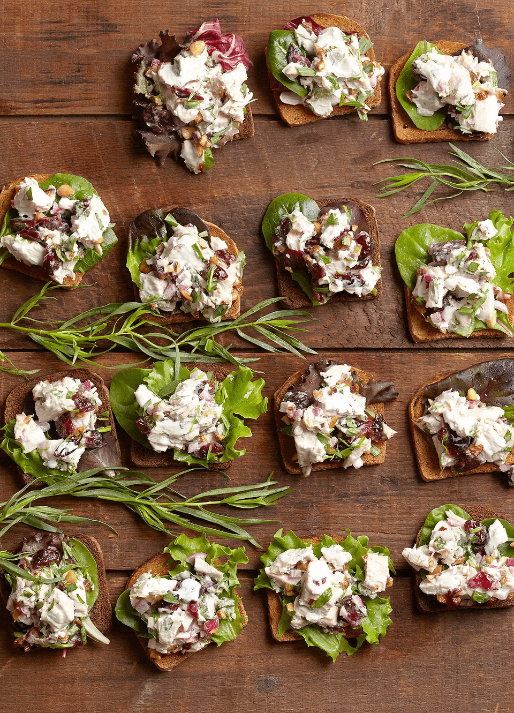

Cranberry Tarragon Chicken Salad

Our diligent attempt at a faithful recreation of the Pride of Ogunquit, Maine.
Ingredients
- 1/2 cup fresh tarragon, chopped
- 1/4 cup red onion, finely diced
- 1 clove garlic, minced
- 1/3 cup mayonnaise (or greek yogurt in a pinch)
- 1 tbsp. white wine vinegar
- 2 medium chicken breasts, chopped (or shredded)
- 1/2 cup dried cranberries
- 1/4 cup chopped toasted nuts (walnuts, pecans, almonds?)
- salt & pepper, to taste
- romaine lettuce, pickles, perhaps mustard for serving
Instructions
- In a medium bowl, stir together the first 5 ingredients w/ some salt and pepper.
- Add the chicken, cranberries, and nuts, stirring to coat.
- Serve cold on bread of choice with lettuce, pickles, & mustard (if desired).